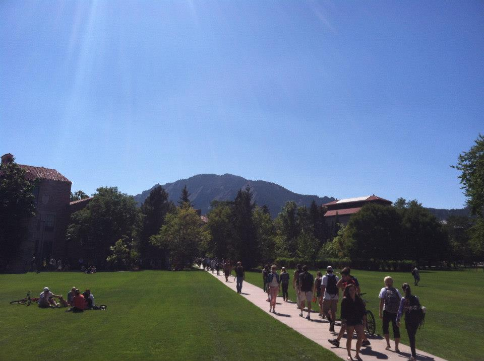
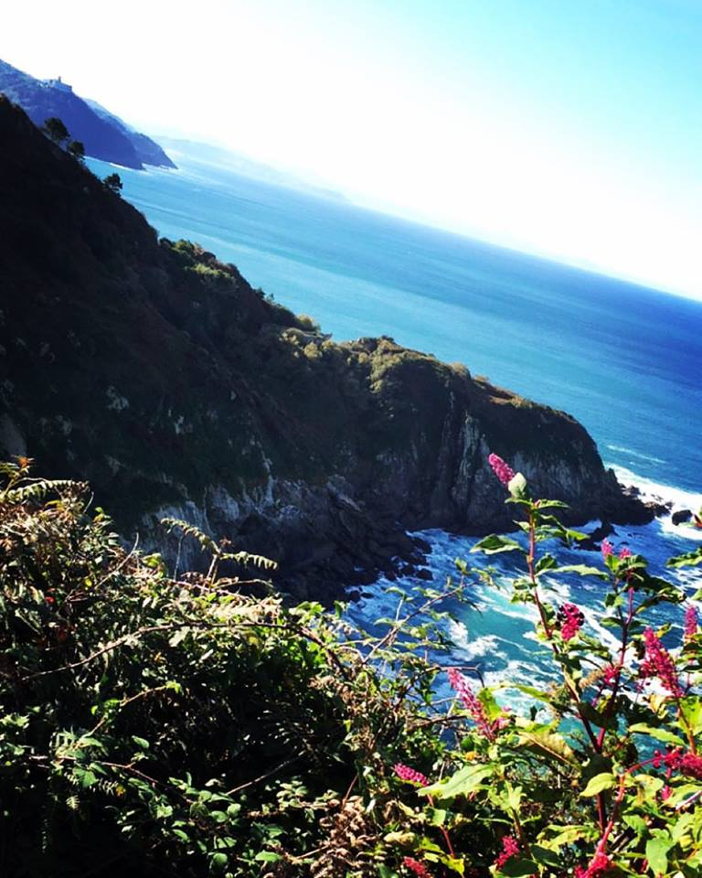
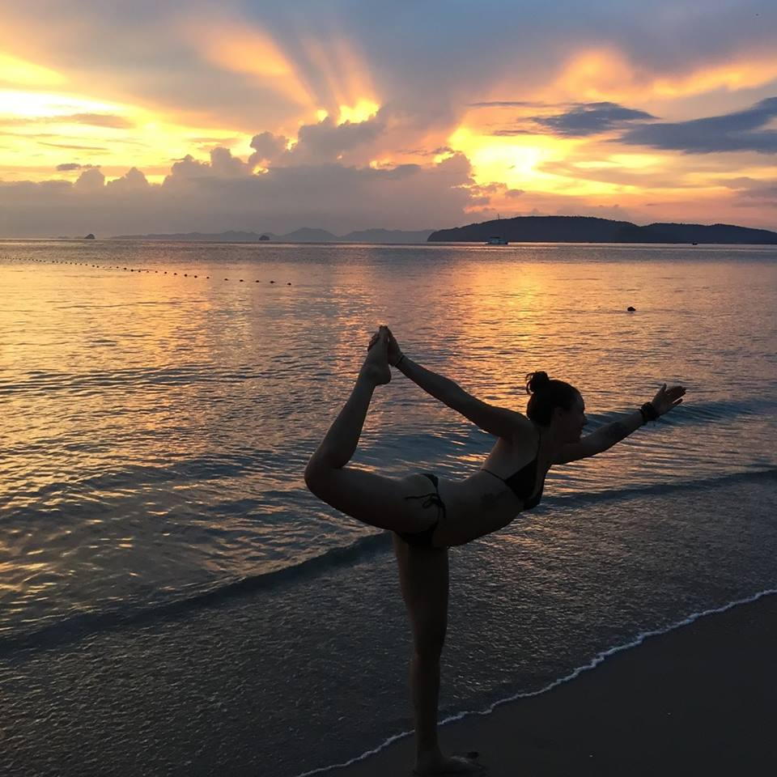
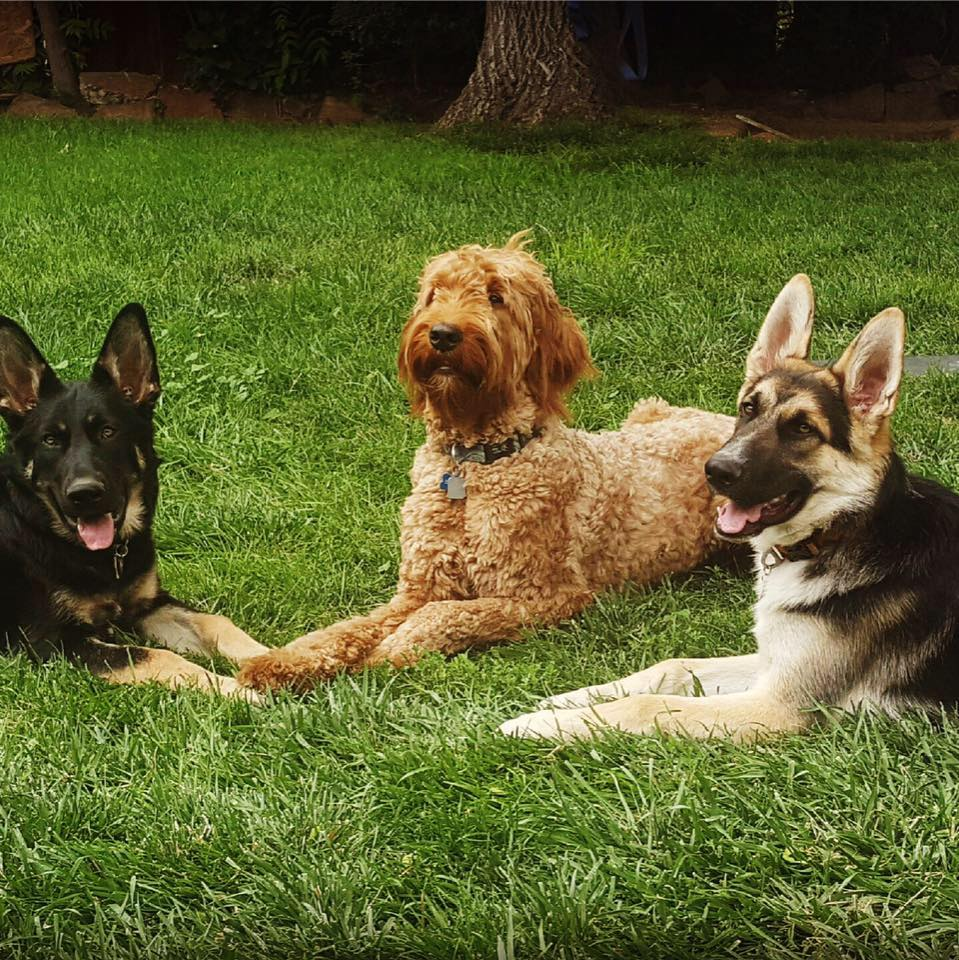

My name is Holly. I studied Integrative Physiology and Spanish Language at the University of Colorado at Boulder. I love to travel, spend time with my dogs, and be outside as much as possible. I have big dreams and am a quick and enthusiastic learner. One day I believe I will be able to combine my skills in technology, health, nutrtion, and travel to make a huge impact on the world. I hope my future success will allow me to do more yoga and adopt more puppies!
I spent a lot of time learning and working on this site, as well as the projects featured in the links below. The journey wasn't all rainbows and unicorns but I'm learning everyday and I am really proud of how everything turned out! I hope you like it!
Comments? Questions? Just wanna say hi? I'd love to hear from you! Contact/Social Media links below.
Featured Work

Education
"Education is what remains after one has forgotten what one has learned in school." ~Albert Einstein
I earned my Bachelor's degree from the University of Colorado Boulder, where I studied Integrative Physiology and Spanish Language. Boulder is a beautiful city that I was lucky enough to call home for 5 years. Here, I fell in love with hiking, skiing, camping and rock climbing.

Travel
"Travel is fatal to prejudice, bigotry, and narrow-mindedness." ~Mark Twain
With each new place I visit, the wanderlust grows stronger. Rather than feeling as if I am checking destinations off my list, I am constantly more overwhelmed by how vast and large our world really is and the list continues to grow longer. One place that will always be near and dear to my heart is Spain. Here is where I learned to travel on my own, how to be trusting of complete strangers and where I learned a new language!

Yoga
“Every human being is the author of his own health or disease.” ~Buddha
Practicing hot yoga and meditation has given me strength, power and calm both mentally and physically. It has also done wonders for my balance and flexibility, coming from a used-to-be clumsy girl who could barely reach her toes.

Pups
"Everything I know I learned from dogs." ~Nora Roberts
No truer words have ever been spoken. Growing up and spending time with animals not only brings me a sense of peace and calm but has taught me so much about life and relationships. How to not hold resent, always stay positive, loyalty to those you love, excitement no matter how big or small the adventure, how to be hearty in approbation and lavish in your praise when dealing with others etc etc etc. You get the point. Plus who doesn't love to cuddle?